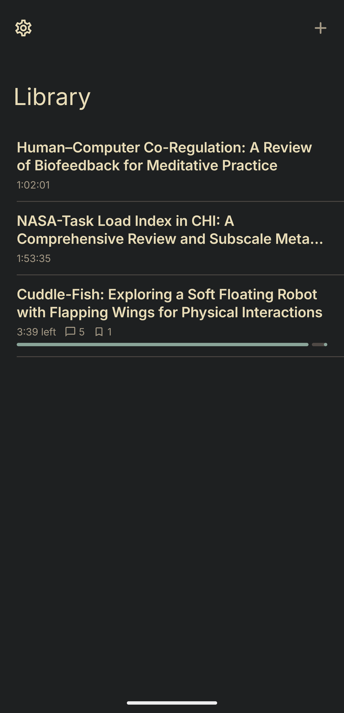
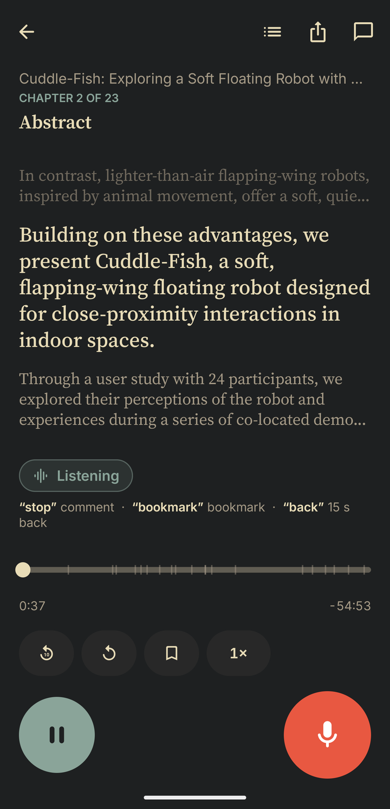
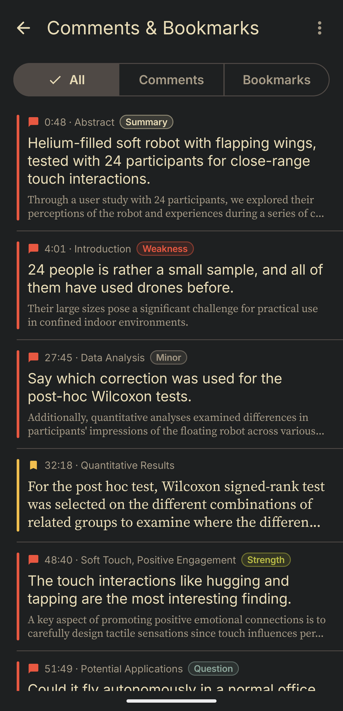
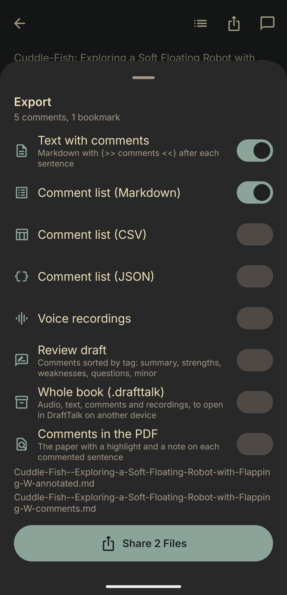

Margin Voice Beta
Review papers by listening. Margin Voice reads a paper to you; when something strikes you, say “stop”, speak your comment, say “continue”. Your comments land on the sentence you just heard, and can go back into the PDF.
Android 13 or newer, 64-bit phone (Pixel 6 and later, most phones since 2019) · about 110 MB · SHA-256 and all versions on the releases page.




Install the beta
- Open this page on your phone and tap Download for Android.
- Open the downloaded file. Android asks once to allow installs from your browser: allow it, then tap Install.
- Updates: download the new version the same way; it installs over the old one and keeps your books and comments.
Try it with a paper
Cuddle-fish: Exploring a Soft Floating Robot with Flapping Wings for Physical Interactions
Xu, Shao, Ju, Shen, Gao, Chen, Zhang, Pai, Barbareschi, Hoppe, Minamizawa, Kunze · Augmented Humans 2025
Tap Sample paper on the phone and open the file with Margin Voice. It brings the audio, the narration text and the paper's PDF, so you can export your comments back into it.
Your own papers: in Margin Voice's library, open the menu at the top and choose Convert Document…, then pick a PDF, Markdown, RTF or text file. The phone narrates it with its own voice, in the background.
What you can say
Start a comment with a review word and it is filed under it:
Export gives a review draft sorted by these headings, the comments as Markdown, CSV or JSON, and the paper's PDF with a highlight and a note on every commented sentence.
Private by design
Voice commands and transcription run on the phone. Nothing is sent anywhere, unless you turn on sync with your own Nextcloud or WebDAV server (Settings › Sync), which also reaches Margin Voice on iPhone, iPad and Mac. There is no account, no analytics and no tracking. Privacy policy.
This is a beta
- Tested on a Pixel 6 Pro. Other phones' microphones and Bluetooth stacks may behave differently.
- Voice commands can misfire while a book plays over the speaker; headphones help.
- Natural neural voices for converting papers on the phone are coming; for now the phone's own voice reads them.
- Found a problem or have an idea? Open an issue on GitHub.